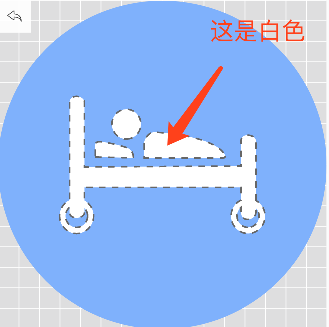

iconfont采坑原文出处:本文由博客园博主老梁讲Java提供。
原文连接:https://www.cnblogs.com/sky-chen/p/11069038.html
1. iconfont采坑
1.1. 前言
- 使用iconfont过程中踩过坑特此记录
- 不知道iconfont的这里也简单介绍一笔，阿里开放的一个图标素材库，用来快速找图标下载使用图标
- iconfont网址
1.2. 所谓单色
- iconfont中有些图标，看着是单色的，也就是整体单色，中间有些白，但是白色和无色还是有区别的啊，当我拿了一个蓝白相间的图标过去赋值个颜色,这个图片就整个一块同色区，所以选图标的时候要看仔细了，编辑下是否中间是白色的

1.3. iconfont的三种使用模式
1.3.1. unicode
- 最原始的使用方式，也是最通用的，支持范围最广，但只支持单色
1.3.2. font class
- 兼容性较好，语义明确，书写更简单，但其也只支持单色的，它和unicode的区别很大程度就是写法不一样点，更多时候就用font class
1.3.3. symbol
- 全新的一种方式，介绍说是未来趋势，毕竟它支持多色图标，但是它的兼容性较差，这也是比较容易遇到的坑点
1.3.4. 我遇到的相关坑
- 前两种方式引入的图片哪怕找来是彩色的引入默认会是黑白色的，所以你找的图标如果本身是彩色的或是除黑白以外的其它单色，那要小心了，可能就会遇到里面轮廓是填充色，那么一旦你给它的颜色，那就是一坨xx在那里了；
- 解决办法最简单的就是，如果你要放的图片本身就是单色的，那就去图标库找黑白图标，那种图标本身设计就会是镂空的，给个颜色后就像写字一样一笔一划颜色就出来了
- 如果你本身要找彩色的图标，那么我是不建议用symbol的，或许以后成熟的可以用，但现在你用了这个，在浏览器里看可能是没问题的，但如果是写小程序，写app啥的，那就说不定了。我就在写小程序的时候试了symbol，报错不能进行下去了，还是回滚变成了引入图片
1.4. 总结
- 总的来说，我的总结就是遇到需要单色图标的时候用font class，复杂颜色的图标只能控制大小直接引入图片了，当然你也可以试试在你编写的环境能不能用symbol，踩踩坑小ks